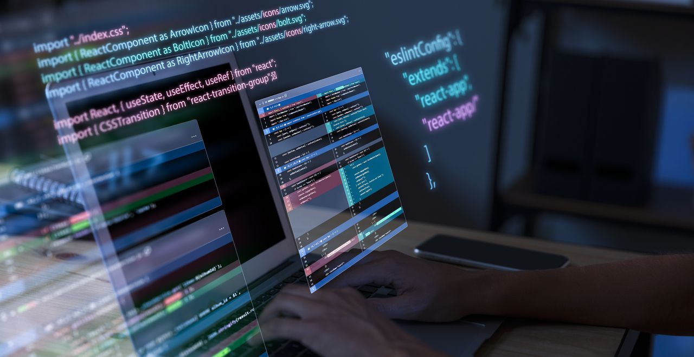

PHP: Pengertian, Contoh, dan Kelebihannya untuk Pemula

PHP adalah bahasa pemrograman populer dan yang akan banyak kamu
temukan dalam pengembangan web. Fungsinya berkaitan erat dengan
kinerja server dan kelancaran sebuah website. PHP juga memainkan
peran penting dalam membangun situs web yang interaktif dan
fungsional. Tak heran, kalau bahasa pemrograman satu ini semakin
banyak digunakan oleh web developer.
Hal ini karena PHP menawarkan berbagai manfaat dan keunggulan,
salah satunya cukup mudah dipelajari. PHP juga termasuk open
source sehingga memungkinan untuk digunakan secara gratis. Bahkan,
PHP tersedia di sistem operasi utama seperti Linux, Windows, dan
MacOS.
Apa Itu PHP?
PHP adalah singkatan dari Pemrosesan Hiperteks, atau dalam bahasa
Inggris Hypertext Preprocessor. Arti PHP merujuk pada bahasa
pemrograman yang dijalankan dari sisi server (server side) dalam
pembuatan dan pengembangan web. PHP juga dikenal sebagai scripting
language atau bahasa pemrograman script.
Untuk membuat halaman web dinamis dan interaktif, PHP dapat
dikombinasikan dengan HTML, CSS, dan JavaScript. PHP sendiri
adalah jenis open source, yang berarti dapat digunakan secara
gratis. Skrip PHP dapat kamu ubah sesuai kebutuhan untuk
dieksekusi pada server web. Hasil olahannya diubah menjadi teks,
gambar, dan elemen lainnya yang ditampilkan di layar pengguna.
Sejarah Singkat PHP
Melansir dari PHP.net, PHP dikembangkan oleh Rasmus Lerdorf,
seorang programmer asal Denmark, pada tahun 1994. Awalnya, PHP
(Personal Home Page) diciptakan sebagai alat untuk mengelola CV
pribadi dan interaksi dengan basis data. Ketika itu, PHP hanya
berfungsi sebagai sekumpulan skrip sederhana dalam bahasa C yang
digunakan untuk menghubungkan aplikasi dengan interface web.
Kemudian, pada bulan September tahun yang sama, Lerdorf
menambahkan lebih banyak fungsi ke PHP untuk meningkatkan
kemampuannya. Selain itu, ia juga mengembangkannya agar bisa
diintegrasikan dengan lebih banyak situs web. Sejak saat itu, PHP
terus mengalami perkembangan dan diperluas oleh komunitas
pengembang di seluruh dunia. Pada tahun 2024, PHP mencapai versi
terbarunya, yaitu versi 8.3.4.
PHP telah menjadi salah satu bahasa pemrograman web yang paling
populer di dunia. Menurut data W3Techs, sekitar 76,4% dari semua
situs web di seluruh dunia menggunakan PHP dalam pengembangan
mereka, termasuk Facebook dan Wikipedia. Hal ini menunjukkan
betapa pentingnya PHP dalam dunia pengembangan web saat ini.
Perbedaan PHP dengan JavaScript
Penggunaan bahasa pemrograman PHP tidak bisa lepas dari Javascript karena keduanya saling melengkapi. Namun, PHP dan JavaScript memiliki sejumlah perbedaan, antara lain:
Fungsi dan peruntukkan
Perbedaan pertama antara PHP dan JavaScript terletak pada
peruntukannya. PHP lebih berfokus pada pemrosesan server-side. Hal
tersebut membuat PHP lebih cocok untuk komunikasi dengan basis
data dan pemrosesan data di sisi server.
Sementara itu, JavaScript berjalan di sisi klien (client-side).
Jadi, peruntukkan JavaScript adalah untuk meningkatkan
interaktivitas pada halaman web, seperti validasi formulir, efek
animasi, dan interaksi dengan elemen HTML. Dengan begitu,
JavaScript lebih berfokus pada pengalaman pengguna di peramban.